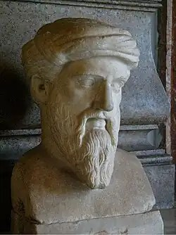
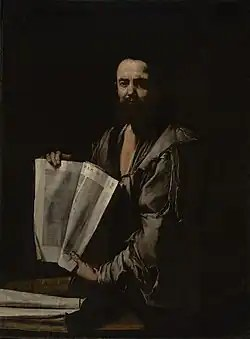
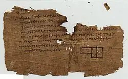
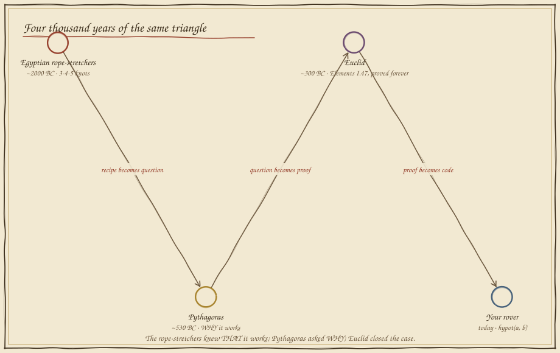
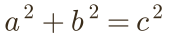
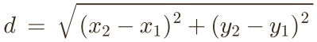

Rigid Triangles
In which a drone must fly home on the battery it has left, and a rope with twelve knots — older than every empire — decides whether it lands or falls.
The flight home is a diagonal
Your survey drone drove its mission the way rovers do: 3 m east, then 4 m north, mapping as it went. Now the battery light is amber. It will fly straight home — the diagonal — and you must set its reserve: too little and it drops in the field; extra reserve is weight it hauls for nothing. Eyeball the diagonal. How far is home?
Short by half a metre: the drone is in the dirt. A metre over: it made it, hauling dead battery the whole way — payload you could have spent on a better camera. The diagonal is some exact number sitting between "3 and 4-ish" and "7, surely" — and your eye cannot find it. Four thousand years ago, people who measured fields for a living had the same problem, and solved it with a rope.
A recipe, a question, a proof
Egyptian surveyors — the harpedonaptai, rope-stretchers — knotted a loop into 3+4+5 parts and pulled it taut: a perfect right angle, every time, for laying out fields after the Nile flood. They knew that it worked. The Greeks demanded to know why — and the why is what your drone runs.




Squares that balance
Here is what Pythagoras actually claimed — not a formula, a picture. Build a literal square on each side of a right triangle. The two smaller squares, cut up and rearranged, exactly fill the big one. Slide the legs and watch the ledger: it never goes out of balance.

Now marry it to Folio 02. The drone's legs east and north are exactly Δx and Δy — signed journeys on Descartes' map. Put the theorem on top and the map learns to measure straight-line distance between any two points:

Set the reserve by theorem
Same amber battery light — but now the reserve slider moves in centimetres, and twiddling would take all day. Compute √(a² + b²), set it, fly. The field below is littered with the drones of estimators.
The tolerance is honest engineering: five centimetres of slack on a multi-metre flight. Guessing cannot hit it; the theorem cannot miss it. When the mission changes, nothing about your method changes — that is what it means for mathematics to be rigid: the triangle holds its shape, and so does the truth about it.
What you can now build
Every "distance to obstacle," every vision system judging how far the ball is, every path planner scoring routes, every physics engine deciding whether two things touch — under all of it, √(Δx² + Δy²), computed millions of times a second. Stage I is complete: your robot can gear its motion, address the whole map, un-hide exact answers, and measure the world. In Stage II it learns to sense and turn — beginning with the arm that must reach, in Folio 05.
Field exercise: take string and twelve equal knots. Pull it into a 3-4-5 triangle between three chairs, and check the corner against a book. You have reproduced the oldest engineering instrument on Earth — then verify it with the newest: your phone's map, and two street corners.
continue to folio 05 — angles that reach return to the codex map